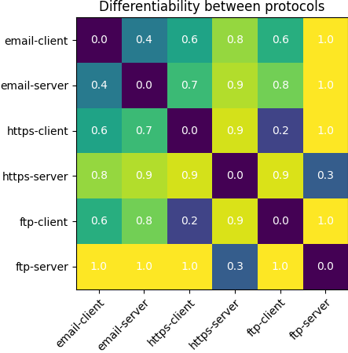
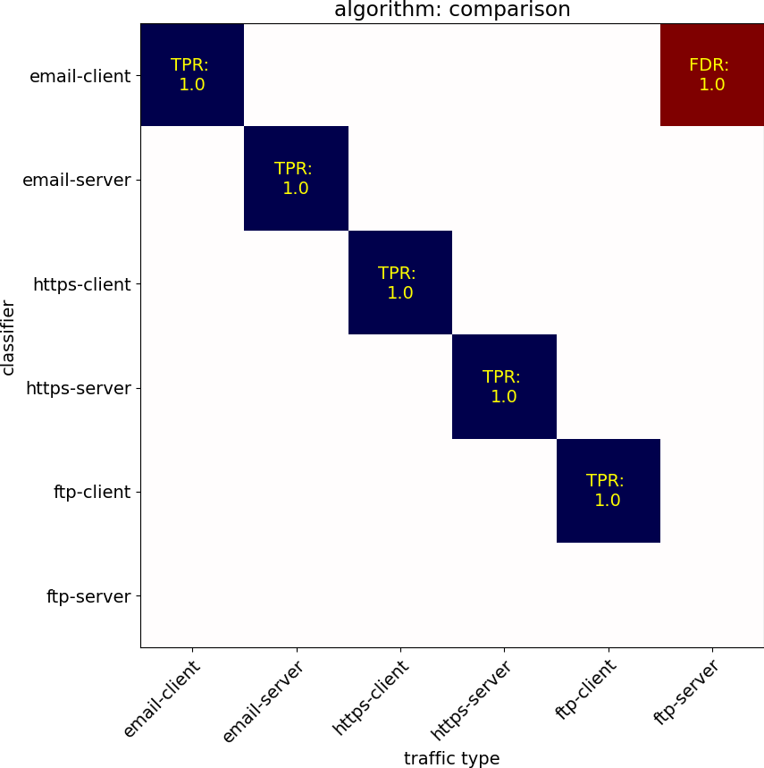

Gold-Mine Test and Evaluation Report
The following report describes the test and evaluation of the following datasets:
| Evaluation Parameter | Value |
|---|---|
| Classifier algorithm | lms |
| Training files | 6 |
| Test files | 6 |
| Processors used | 8 |
| Processing time | 0.0976 minutes |
| Result AUC | 0.8444 |
Result summary
Summarized training results
Training analysis estimates the difference in fingerprinting the various protocols in the chart below, where a lighter color (yellow) represents greater diversity between the protocols and easier to identify against the corresponding.

Summarized test evaluation results
Evaluation results, with blue indicating good (true-positives) and red indicating false positive rates. These results are likely more accurate than the estimated similarity above.

The ROC curve for these test results:

Measured Classifier Precisions
| Classifier | tp | fp | Precision |
|---|---|---|---|
| email-client | 1 | 1 | 0.5000 |
| email-server | 1 | 0 | 1.0000 |
| https-client | 1 | 0 | 1.0000 |
| https-server | 1 | 0 | 1.0000 |
| ftp-client | 1 | 0 | 1.0000 |
Individual Classifier ROCs
Classifier ROC: email-client

Classifier ROC: email-server

Classifier ROC: https-client

Classifier ROC: https-server

Classifier ROC: ftp-client

Detailed test results
The following section describes each test case and whether the classification model successfully identified the traffic in question. Each file below contains a graph showing the detection pseudo-confidence between 0.0 and 1.0, along with the classifier confidence scores per flow-identifier within the traffic observed.
 Test 1: email-client traffic
Test 1: email-client traffic
File: ipsec-data/email-smtp.pcap
- Filtered applied: esp and src 10.0.3.2
- Packets processed: 1400
Traffic label: email-client
Processing time: 0.0107 minutes
Flows identified:
- flow identifier: (50, ‘10.0.3.2’, ‘10.0.6.2’)
- Total packets: 1400
Label Score email-client 0.7169 https-server 0.3331 email-server 0.2185 ftp-server 0.1667 https-client 0.0934 ftp-client 0.0613
Test 2: email-server traffic
File: ipsec-data/email-smtp.pcap
- Filtered applied: esp and src 10.0.6.2
- Packets processed: 1400
Traffic label: email-server
Processing time: 0.0087 minutes
Flows identified:
- flow identifier: (50, ‘10.0.6.2’, ‘10.0.3.2’)
- Total packets: 1400
Label Score email-server 0.9857 ftp-server 0.5000 https-client 0.3361 email-client 0.1573 https-server 0.1537 ftp-client 0.1205
Test 3: https-client traffic
File: ipsec-data/web-browsing.pcap
- Filtered applied: esp and src 10.0.3.2
- Packets processed: 1400
Traffic label: https-client
Processing time: 0.0079 minutes

Flows identified:
- flow identifier: (50, ‘10.0.3.2’, ‘10.0.6.2’)
- Total packets: 1400
Label Score https-client 0.9286 email-server 0.3898 ftp-server 0.2222 https-server 0.1537 email-client 0.0976 ftp-client 0.0243
Test 4: https-server traffic
File: ipsec-data/web-browsing.pcap
- Filtered applied: esp and src 10.0.6.2
- Packets processed: 1400
Traffic label: https-server
Processing time: 0.0120 minutes
Flows identified:
- flow identifier: (50, ‘10.0.6.2’, ‘10.0.3.2’)
- Total packets: 1400
Label Score https-server 0.9806 email-client 0.3772 ftp-server 0.1542 email-server 0.1493 https-client 0.1293 ftp-client 0.0469
Test 5: ftp-client traffic
File: ipsec-data/ftp.pcap
- Filtered applied: esp and src 10.0.3.2
- Packets processed: 1400
Traffic label: ftp-client
Processing time: 0.0038 minutes

Flows identified:
- flow identifier: (50, ‘10.0.3.2’, ‘10.0.6.2’)
- Total packets: 1400
Label Score ftp-client 0.4018 ftp-server 0.2857 email-server 0.1954 https-client 0.0407 https-server 0.0383 email-client 0.0380
Test 6: ftp-server traffic
File: ipsec-data/ftp.pcap
- Filtered applied: esp and src 10.0.6.2
- Packets processed: 1400
Traffic label: ftp-server
Processing time: 0.0043 minutes

Flows identified:
- flow identifier: (50, ‘10.0.6.2’, ‘10.0.3.2’)
- Total packets: 1400
Label Score email-client 0.0200 https-server 0.0195 ftp-server 0.0012 email-server 0.0000 https-client 0.0000 ftp-client 0.0000